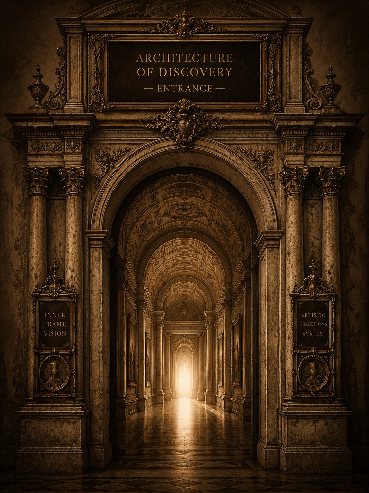

Inner Frame Vision was never intended to become a collection of separate artworks.
It is an architectural system created to preserve ideas, discoveries, worlds, questions, and artistic research within a unified museum language.
Every artistic direction represents an independent field of exploration rather than a limitation of artistic practice.
The purpose of this architecture is not to divide works into categories, but to provide each idea with its own space for development.
Every direction is an open field of research.
New works expand the movement rather than complete it.
The architecture exists before the work, yet it continues to evolve through every new creation.
Within Inner Frame Vision, artistic directions may exist independently or intersect within a single artwork, exhibition, film, installation, Inner Book, or museum space.
One work may belong to several directions simultaneously while remaining part of one unified museum language.
The museum is not a finished collection.
It is a living structure.
Every new discovery finds its own room.
Every new idea finds its own frame.
Every new world finds its own place.
The architecture exists so that nothing is lost.
It is a house for ideas.
A museum for thoughts.
A place where future works may already belong before they are created.